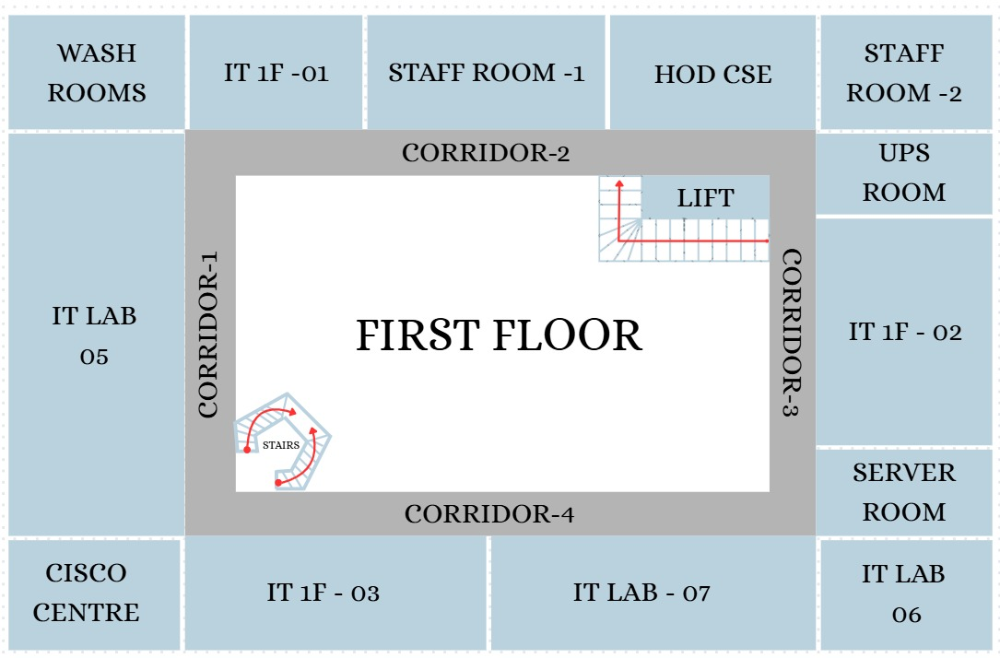

Node
Path Node
Start
End
Choose Route
Tip: choose any two rooms, labs, washroom, stairs, or lift.
Path Details
Select a start and destination.

Tip: choose any two rooms, labs, washroom, stairs, or lift.